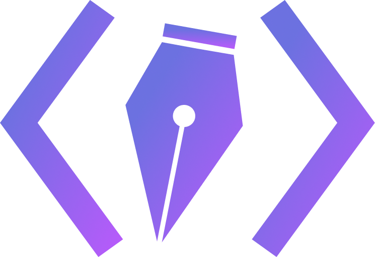

Course Instructor @ Berkeley Web Design DeCal
Fall 2021
The Web Design DeCal is a 2-unit student-run class at UC Berkeley that teaches web design (Figma) and development (HTML, CSS, JavaScript) to a class of 120 students every semester.
As one of three course instructors, I taught weekly lectures, held office hours, managed grading, maintained the class portal, and led a team of eight teaching assistants.
Prior to that, I was also a TA for two semesters :)